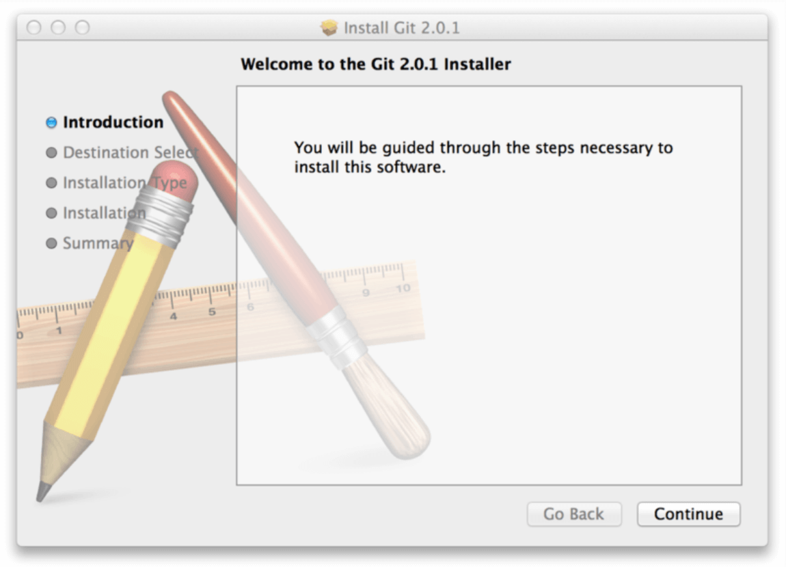
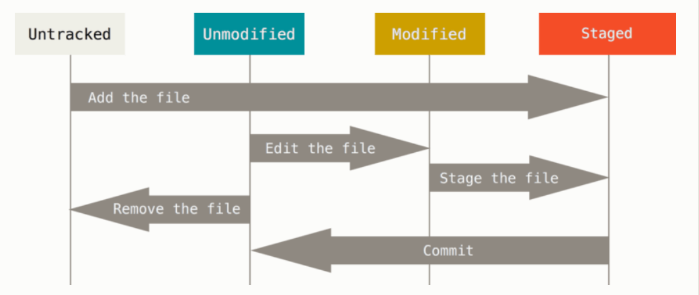

Git：基础
安装 Git
在你开始使用 Git 前，需要将它安装在你的计算机上。 即便已经安装，最好将它升级到最新的版本。 你可以通过软件包或者其它安装程序来安装，或者下载源码编译安装。
在 Linux 上安装
如果你想在 Linux 上用二进制安装程序来安装 Git，可以使用发行版包含的基础软件包管理工具来安装。 如果以 Fedora 上为例，你可以使用 yum：
1 | $ sudo yum install git |
如果你在基于 Debian 的发行版上，请尝试用 apt-get：
1 | $ sudo apt-get install git |
要了解更多选择，Git 官方网站上有在各种 Unix 风格的系统上安装步骤，网址为 https://git-scm.com/download/linux。
在 Mac 上安装
在 Mac 上安装 Git 有多种方式。 最简单的方法是安装 Xcode Command Line Tools。 Mavericks （10.9） 或更高版本的系统中，在 Terminal 里尝试首次运行 git 命令即可。 如果没有安装过命令行开发者工具，将会提示你安装。
如果你想安装更新的版本，可以使用二进制安装程序。 官方维护的 OSX Git 安装程序可以在 Git 官方网站下载，网址为 https://git-scm.com/download/mac。

Figure 7. Git OS X 安装程序.
你也可以将它作为 GitHub for Mac 的一部分来安装。 它们的图形化 Git 工具有一个安装命令行工具的选项。 你可以从 GitHub for Mac 网站下载该工具，网址为 http://mac.github.com。
在 Windows 上安装
在 Windows 上安装 Git 也有几种安装方法。 官方版本可以在 Git 官方网站下载。 打开 http://git-scm.com/download/win，下载会自动开始。 要注意这是一个名为 Git for Windows 的项目（也叫做 msysGit），和 Git 是分别独立的项目；更多信息请访问 http://gitforwindows.org。
另一个简单的方法是安装 GitHub for Windows。 该安装程序包含图形化和命令行版本的 Git。 它也能支持 Powershell，提供了稳定的凭证缓存和健全的换行设置。 稍后我们会对这方面有更多了解，现在只要一句话就够了，这些都是你所需要的。 你可以在 GitHub for Windows 网站下载，网址为 http://windows.github.com。
从源代码安装
有人觉得从源码安装 Git 更实用，因为你能得到最新的版本。 二进制安装程序倾向于有一些滞后，当然近几年 Git 已经成熟，这个差异不再显著。
如果你想从源码安装 Git，需要安装 Git 依赖的库：curl、zlib、openssl、expat，还有 libiconv。 如果你的系统上有 yum （如 Fedora）或者 apt-get（如基于 Debian 的系统），可以使用以下命令之一来安装最小化的依赖包来编译和安装 Git 的二进制版：
1 | $ sudo yum install curl-devel expat-devel gettext-devel \ |
为了能够添加更多格式的文档（如 doc, html, info），你需要安装以下的依赖包：
1 | $ sudo yum install asciidoc xmlto docbook2x |
当你安装好所有的必要依赖，你可以继续从几个地方来取得最新发布版本的 tar 包。 你可以从 Kernel.org 网站获取，网址为 https://www.kernel.org/pub/software/scm/git，或从 GitHub 网站上的镜像来获得，网址为 https://github.com/git/git/releases。 通常在 GitHub 上的是最新版本，但 kernel.org 上包含有文件下载签名，如果你想验证下载正确性的话会用到。
接着，编译并安装：
1 | $ tar -zxf git-2.0.0.tar.gz |
完成后，你可以使用 Git 来获取 Git 的升级：
1 | $ git clone git://git.kernel.org/pub/scm/git/git.git |
初次运行 Git 前的配置
既然已经在系统上安装了 Git，你会想要做几件事来定制你的 Git 环境。 每台计算机上只需要配置一次，程序升级时会保留配置信息。 你可以在任何时候再次通过运行命令来修改它们。
Git 自带一个 git config 的工具来帮助设置控制 Git 外观和行为的配置变量。 这些变量存储在三个不同的位置：
/etc/gitconfig文件: 包含系统上每一个用户及他们仓库的通用配置。 如果使用带有--system选项的git config时，它会从此文件读写配置变量。~/.gitconfig或~/.config/git/config文件：只针对当前用户。 可以传递--global选项让 Git 读写此文件。- 当前使用仓库的 Git 目录中的
config文件（就是.git/config）：针对该仓库。
每一个级别覆盖上一级别的配置，所以 .git/config 的配置变量会覆盖 /etc/gitconfig 中的配置变量。
在 Windows 系统中，Git 会查找 $HOME 目录下（一般情况下是 C:\Users\$USER）的 .gitconfig 文件。 Git 同样也会寻找 /etc/gitconfig 文件，但只限于 MSys 的根目录下，即安装 Git 时所选的目标位置。
用户信息
当安装完 Git 应该做的第一件事就是设置你的用户名称与邮件地址。 这样做很重要，因为每一个 Git 的提交都会使用这些信息，并且它会写入到你的每一次提交中，不可更改：
1 | $ git config --global user.name "John Doe" |
再次强调，如果使用了 –global 选项，那么该命令只需要运行一次，因为之后无论你在该系统上做任何事情， Git 都会使用那些信息。 当你想针对特定项目使用不同的用户名称与邮件地址时，可以在那个项目目录下运行没有 –global 选项的命令来配置。
很多 GUI 工具都会在第一次运行时帮助你配置这些信息。
文本编辑器
既然用户信息已经设置完毕，你可以配置默认文本编辑器了，当 Git 需要你输入信息时会调用它。 如果未配置，Git 会使用操作系统默认的文本编辑器，通常是 Vim。 如果你想使用不同的文本编辑器，例如 Emacs，可以这样做：
1 | $ git config --global core.editor emacs |
检查配置信息
如果想要检查你的配置，可以使用 git config --list 命令来列出所有 Git 当时能找到的配置。
1 | $ git config --list |
你可能会看到重复的变量名，因为 Git 会从不同的文件中读取同一个配置（例如：/etc/gitconfig 与 ~/.gitconfig）。 这种情况下，Git 会使用它找到的每一个变量的最后一个配置。
你可以通过输入 git config <key>： 来检查 Git 的某一项配置
1 | $ git config user.name |
获取帮助
若你使用 Git 时需要获取帮助，有三种方法可以找到 Git 命令的使用手册：
1 | $ git help <verb> |
例如，要想获得 config 命令的手册，执行
1 | $ git help config |
这些命令很棒，因为你随时随地可以使用而无需联网。 如果你觉得手册或者本书的内容还不够用，你可以尝试在 Freenode IRC 服务器（ irc.freenode.net ）的 #git 或 #github 频道寻求帮助。 这些频道经常有上百人在线，他们都精通 Git 并且乐于助人。
获取 Git 仓库
有两种取得 Git 项目仓库的方法。 第一种是在现有项目或目录下导入所有文件到 Git 中； 第二种是从一个服务器克隆一个现有的 Git 仓库。
在现有目录中初始化仓库
如果你打算使用 Git 来对现有的项目进行管理，你只需要进入该项目目录并输入：
1 | $ git init |
该命令将创建一个名为 .git 的子目录，这个子目录含有你初始化的 Git 仓库中所有的必须文件，这些文件是 Git 仓库的骨干。 但是，在这个时候，我们仅仅是做了一个初始化的操作，你的项目里的文件还没有被跟踪。 (参见 Git 内部原理 来了解更多关于到底 .git 文件夹中包含了哪些文件的信息。)
如果你是在一个已经存在文件的文件夹（而不是空文件夹）中初始化 Git 仓库来进行版本控制的话，你应该开始跟踪这些文件并提交。 你可通过 git add 命令来实现对指定文件的跟踪，然后执行 git commit 提交：
1 | $ git add *.c |
稍后我们再逐一解释每一条指令的意思。 现在，你已经得到了一个实际维护（或者说是跟踪）着若干个文件的 Git 仓库。
克隆现有的仓库
如果你想获得一份已经存在了的 Git 仓库的拷贝，比如说，你想为某个开源项目贡献自己的一份力，这时就要用到 git clone 命令。 如果你对其它的 VCS 系统（比如说 Subversion）很熟悉，请留心一下你所使用的命令是”clone”而不是”checkout”。 这是 Git 区别于其它版本控制系统的一个重要特性，Git 克隆的是该 Git 仓库服务器上的几乎所有数据，而不是仅仅复制完成你的工作所需要文件。 当你执行 git clone 命令的时候，默认配置下远程 Git 仓库中的每一个文件的每一个版本都将被拉取下来。 事实上，如果你的服务器的磁盘坏掉了，你通常可以使用任何一个克隆下来的用户端来重建服务器上的仓库（虽然可能会丢失某些服务器端的挂钩设置，但是所有版本的数据仍在，详见 在服务器上搭建 Git ）。
克隆仓库的命令格式是 git clone [url]。 比如，要克隆 Git 的可链接库 libgit2，可以用下面的命令：
1 | $ git clone https://github.com/libgit2/libgit2 |
这会在当前目录下创建一个名为 “libgit2” 的目录，并在这个目录下初始化一个 .git 文件夹，从远程仓库拉取下所有数据放入 .git 文件夹，然后从中读取最新版本的文件的拷贝。 如果你进入到这个新建的 libgit2 文件夹，你会发现所有的项目文件已经在里面了，准备就绪等待后续的开发和使用。 如果你想在克隆远程仓库的时候，自定义本地仓库的名字，你可以使用如下命令：
1 | $ git clone https://github.com/libgit2/libgit2 mylibgit |
这将执行与上一个命令相同的操作，不过在本地创建的仓库名字变为 mylibgit。
Git 支持多种数据传输协议。 上面的例子使用的是 https:// 协议，不过你也可以使用 git:// 协议或者使用 SSH 传输协议，比如 user@server:path/to/repo.git 。 在服务器上搭建 Git 将会介绍所有这些协议在服务器端如何配置使用，以及各种方式之间的利弊。
记录每次更新到仓库
现在我们手上有了一个真实项目的 Git 仓库，并从这个仓库中取出了所有文件的工作拷贝。 接下来，对这些文件做些修改，在完成了一个阶段的目标之后，提交本次更新到仓库。
请记住，你工作目录下的每一个文件都不外乎这两种状态：已跟踪或未跟踪。 已跟踪的文件是指那些被纳入了版本控制的文件，在上一次快照中有它们的记录，在工作一段时间后，它们的状态可能处于未修改，已修改或已放入暂存区。 工作目录中除已跟踪文件以外的所有其它文件都属于未跟踪文件，它们既不存在于上次快照的记录中，也没有放入暂存区。 初次克隆某个仓库的时候，工作目录中的所有文件都属于已跟踪文件，并处于未修改状态。
编辑过某些文件之后，由于自上次提交后你对它们做了修改，Git 将它们标记为已修改文件。 我们逐步将这些修改过的文件放入暂存区，然后提交所有暂存了的修改，如此反复。所以使用 Git 时文件的生命周期如下：

Figure 8. 文件的状态变化周期
检查当前文件状态
要查看哪些文件处于什么状态，可以用 git status 命令。 如果在克隆仓库后立即使用此命令，会看到类似这样的输出：
1 | $ git status |
这说明你现在的工作目录相当干净。换句话说，所有已跟踪文件在上次提交后都未被更改过。 此外，上面的信息还表明，当前目录下没有出现任何处于未跟踪状态的新文件，否则 Git 会在这里列出来。 最后，该命令还显示了当前所在分支，并告诉你这个分支同远程服务器上对应的分支没有偏离。 现在，分支名是 “master”,这是默认的分支名。 我们在 Git 分支 会详细讨论分支和引用。
现在，让我们在项目下创建一个新的 README 文件。 如果之前并不存在这个文件，使用 git status 命令，你将看到一个新的未跟踪文件：
1 | $ echo 'My Project' > README |
在状态报告中可以看到新建的 README 文件出现在 Untracked files 下面。 未跟踪的文件意味着 Git 在之前的快照（提交）中没有这些文件；Git 不会自动将之纳入跟踪范围，除非你明明白白地告诉它“我需要跟踪该文件”， 这样的处理让你不必担心将生成的二进制文件或其它不想被跟踪的文件包含进来。 不过现在的例子中，我们确实想要跟踪管理 README 这个文件。
跟踪新文件
使用命令 git add 开始跟踪一个文件。 所以，要跟踪 README 文件，运行：
1 | $ git add README |
此时再运行 git status 命令，会看到 README 文件已被跟踪，并处于暂存状态：
1 | $ git status |
只要在 Changes to be committed 这行下面的，就说明是已暂存状态。 如果此时提交，那么该文件此时此刻的版本将被留存在历史记录中。 你可能会想起之前我们使用 git init 后就运行了 git add (files) 命令，开始跟踪当前目录下的文件。 git add 命令使用文件或目录的路径作为参数；如果参数是目录的路径，该命令将递归地跟踪该目录下的所有文件。
暂存已修改文件
现在我们来修改一个已被跟踪的文件。 如果你修改了一个名为 CONTRIBUTING.md 的已被跟踪的文件，然后运行 git status 命令，会看到下面内容：
1 | $ git status |
文件 CONTRIBUTING.md 出现在 Changes not staged for commit 这行下面，说明已跟踪文件的内容发生了变化，但还没有放到暂存区。 要暂存这次更新，需要运行 git add 命令。 这是个多功能命令：可以用它开始跟踪新文件，或者把已跟踪的文件放到暂存区，还能用于合并时把有冲突的文件标记为已解决状态等。 将这个命令理解为“添加内容到下一次提交中”而不是“将一个文件添加到项目中”要更加合适。 现在让我们运行 git add 将”CONTRIBUTING.md”放到暂存区，然后再看看 git status 的输出：
1 | $ git add CONTRIBUTING.md |
现在两个文件都已暂存，下次提交时就会一并记录到仓库。 假设此时，你想要在 CONTRIBUTING.md 里再加条注释， 重新编辑存盘后，准备好提交。 不过且慢，再运行 git status 看看：
1 | $ vim CONTRIBUTING.md |
怎么回事？ 现在 CONTRIBUTING.md 文件同时出现在暂存区和非暂存区。 这怎么可能呢？ 好吧，实际上 Git 只不过暂存了你运行 git add 命令时的版本， 如果你现在提交，CONTRIBUTING.md 的版本是你最后一次运行 git add 命令时的那个版本，而不是你运行 git commit 时，在工作目录中的当前版本。 所以，运行了 git add 之后又作了修订的文件，需要重新运行 git add 把最新版本重新暂存起来：
1 | $ git add CONTRIBUTING.md |
状态简览
git status 命令的输出十分详细，但其用语有些繁琐。 如果你使用 git status -s 命令或 git status --short 命令，你将得到一种更为紧凑的格式输出。 运行 git status -s ，状态报告输出如下：
1 | $ git status -s |
新添加的未跟踪文件前面有 ?? 标记，新添加到暂存区中的文件前面有 A 标记，修改过的文件前面有 M 标记。 你可能注意到了 M 有两个可以出现的位置，出现在右边的 M 表示该文件被修改了但是还没放入暂存区，出现在靠左边的 M 表示该文件被修改了并放入了暂存区。 例如，上面的状态报告显示： README 文件在工作区被修改了但是还没有将修改后的文件放入暂存区,lib/simplegit.rb 文件被修改了并将修改后的文件放入了暂存区。 而 Rakefile 在工作区被修改并提交到暂存区后又在工作区中被修改了，所以在暂存区和工作区都有该文件被修改了的记录。
忽略文件
一般我们总会有些文件无需纳入 Git 的管理，也不希望它们总出现在未跟踪文件列表。 通常都是些自动生成的文件，比如日志文件，或者编译过程中创建的临时文件等。 在这种情况下，我们可以创建一个名为 .gitignore 的文件，列出要忽略的文件模式。 来看一个实际的例子：
1 | $ cat .gitignore |
第一行告诉 Git 忽略所有以 .o 或 .a 结尾的文件。一般这类对象文件和存档文件都是编译过程中出现的。 第二行告诉 Git 忽略所有以波浪符（~）结尾的文件，许多文本编辑软件（比如 Emacs）都用这样的文件名保存副本。 此外，你可能还需要忽略 log，tmp 或者 pid 目录，以及自动生成的文档等等。 要养成一开始就设置好 .gitignore 文件的习惯，以免将来误提交这类无用的文件。
文件 .gitignore 的格式规范如下：
所有空行或者以 ＃ 开头的行都会被 Git 忽略。
可以使用标准的 glob 模式匹配。
匹配模式可以以（/）开头防止递归。
匹配模式可以以（/）结尾指定目录。
要忽略指定模式以外的文件或目录，可以在模式前加上惊叹号（!）取反。
所谓的 glob 模式是指 shell 所使用的简化了的正则表达式。 星号 (*)匹配零个或多个任意字符；[abc] 匹配任何一个列在方括号中的字符（这个例子要么匹配一个 a，要么匹配一个 b，要么匹配一个 c）；问号（?）只匹配一个任意字符；如果在方括号中使用短划线分隔两个字符，表示所有在这两个字符范围内的都可以匹配（比如 [0-9] 表示匹配所有 0 到 9 的数字）。 使用两个星号 (*) 表示匹配任意中间目录，比如 a/**/z 可以匹配 a/z , a/b/z 或 a/b/c/z 等。
我们再看一个 .gitignore 文件的例子：
1 | # no .a files |
查看已暂存和未暂存的修改
如果 git status 命令的输出对于你来说过于模糊，你想知道具体修改了什么地方，可以用 git diff 命令。 稍后我们会详细介绍 git diff，你可能通常会用它来回答这两个问题：当前做的哪些更新还没有暂存？ 有哪些更新已经暂存起来准备好了下次提交？ 尽管 git status 已经通过在相应栏下列出文件名的方式回答了这个问题，git diff 将通过文件补丁的格式显示具体哪些行发生了改变。
假如再次修改 README 文件后暂存，然后编辑 CONTRIBUTING.md 文件后先不暂存， 运行 status 命令将会看到：
1 | $ git status |
要查看尚未暂存的文件更新了哪些部分，不加参数直接输入 git diff：
1 | $ git diff |
此命令比较的是工作目录中当前文件和暂存区域快照之间的差异， 也就是修改之后还没有暂存起来的变化内容。
若要查看已暂存的将要添加到下次提交里的内容，可以用 git diff --cached 命令。（Git 1.6.1 及更高版本还允许使用 git diff --staged，效果是相同的，但更好记些。）
1 | $ git diff --staged |
请注意，git diff 本身只显示尚未暂存的改动，而不是自上次提交以来所做的所有改动。 所以有时候你一下子暂存了所有更新过的文件后，运行 git diff 后却什么也没有，就是这个原因。
像之前说的，暂存 CONTRIBUTING.md 后再编辑，运行 git status 会看到暂存前后的两个版本。 如果我们的环境（终端输出）看起来如下：
1 | $ git add CONTRIBUTING.md |
现在运行 git diff 看暂存前后的变化：
1 | $ git diff |
然后用 git diff --cached 查看已经暂存起来的变化：（--staged 和 --cached 是同义词）
1 | $ git diff --cached |
提交更新
现在的暂存区域已经准备妥当可以提交了。 在此之前，请一定要确认还有什么修改过的或新建的文件还没有 git add 过，否则提交的时候不会记录这些还没暂存起来的变化。 这些修改过的文件只保留在本地磁盘。 所以，每次准备提交前，先用 git status 看下，是不是都已暂存起来了， 然后再运行提交命令 git commit：
1 | $ git commit |
这种方式会启动文本编辑器以便输入本次提交的说明。
编辑器会显示类似下面的文本信息（本例选用 Vim 的屏显方式展示）：
1 | # Please enter the commit message for your changes. Lines starting |
可以看到，默认的提交消息包含最后一次运行 git status 的输出，放在注释行里，另外开头还有一空行，供你输入提交说明。 你完全可以去掉这些注释行，不过留着也没关系，多少能帮你回想起这次更新的内容有哪些。 （如果想要更详细的对修改了哪些内容的提示，可以用 -v 选项，这会将你所做的改变的 diff 输出放到编辑器中从而使你知道本次提交具体做了哪些修改。） 退出编辑器时，Git 会丢掉注释行，用你输入提交附带信息生成一次提交。
另外，你也可以在 commit 命令后添加 -m 选项，将提交信息与命令放在同一行，如下所示：
1 | $ git commit -m "Story 182: Fix benchmarks for speed" |
好，现在你已经创建了第一个提交！ 可以看到，提交后它会告诉你，当前是在哪个分支（master）提交的，本次提交的完整 SHA-1 校验和是什么（463dc4f），以及在本次提交中，有多少文件修订过，多少行添加和删改过。
请记住，提交时记录的是放在暂存区域的快照。 任何还未暂存的仍然保持已修改状态，可以在下次提交时纳入版本管理。 每一次运行提交操作，都是对你项目作一次快照，以后可以回到这个状态，或者进行比较。
跳过使用暂存区域
尽管使用暂存区域的方式可以精心准备要提交的细节，但有时候这么做略显繁琐。 Git 提供了一个跳过使用暂存区域的方式， 只要在提交的时候，给 git commit 加上 -a 选项，Git 就会自动把所有已经跟踪过的文件暂存起来一并提交，从而跳过 git add 步骤：
1 | $ git status |
看到了吗？提交之前不再需要 git add 文件“CONTRIBUTING.md”了。
移除文件
要从 Git 中移除某个文件，就必须要从已跟踪文件清单中移除（确切地说，是从暂存区域移除），然后提交。 可以用 git rm 命令完成此项工作，并连带从工作目录中删除指定的文件，这样以后就不会出现在未跟踪文件清单中了。
如果只是简单地从工作目录中手工删除文件，运行 git status 时就会在 “Changes not staged for commit” 部分（也就是 未暂存清单）看到：
1 | $ rm PROJECTS.md |
然后再运行 git rm 记录此次移除文件的操作：
1 | $ git rm PROJECTS.md |
下一次提交时，该文件就不再纳入版本管理了。 如果删除之前修改过并且已经放到暂存区域的话，则必须要用强制删除选项 -f（译注：即 force 的首字母）。 这是一种安全特性，用于防止误删还没有添加到快照的数据，这样的数据不能被 Git 恢复。
另外一种情况是，我们想把文件从 Git 仓库中删除（亦即从暂存区域移除），但仍然希望保留在当前工作目录中。 换句话说，你想让文件保留在磁盘，但是并不想让 Git 继续跟踪。 当你忘记添加 .gitignore 文件，不小心把一个很大的日志文件或一堆 .a 这样的编译生成文件添加到暂存区时，这一做法尤其有用。 为达到这一目的，使用 --cached 选项：
1 | $ git rm --cached README |
git rm 命令后面可以列出文件或者目录的名字，也可以使用 glob 模式。 比方说：
1 | $ git rm log/\*.log |
注意到星号 * 之前的反斜杠 \， 因为 Git 有它自己的文件模式扩展匹配方式，所以我们不用 shell 来帮忙展开。 此命令删除 log/ 目录下扩展名为 .log 的所有文件。 类似的比如：
1 | $ git rm \*~ |
该命令为删除以 ~ 结尾的所有文件。
移动文件
不像其它的 VCS 系统，Git 并不显式跟踪文件移动操作。 如果在 Git 中重命名了某个文件，仓库中存储的元数据并不会体现出这是一次改名操作。 不过 Git 非常聪明，它会推断出究竟发生了什么，至于具体是如何做到的，我们稍后再谈。
既然如此，当你看到 Git 的 mv 命令时一定会困惑不已。 要在 Git 中对文件改名，可以这么做：
1 | $ git mv file_from file_to |
它会恰如预期般正常工作。 实际上，即便此时查看状态信息，也会明白无误地看到关于重命名操作的说明：
1 | $ git mv README.md README |
其实，运行 git mv 就相当于运行了下面三条命令：
1 | $ mv README.md README |
如此分开操作，Git 也会意识到这是一次改名，所以不管何种方式结果都一样。 两者唯一的区别是，mv 是一条命令而另一种方式需要三条命令，直接用 git mv 轻便得多。 不过有时候用其他工具批处理改名的话，要记得在提交前删除老的文件名，再添加新的文件名。
查看提交历史
在提交了若干更新，又或者克隆了某个项目之后，你也许想回顾下提交历史。 完成这个任务最简单而又有效的工具是 git log 命令。
接下来的例子会用我专门用于演示的 simplegit 项目， 运行下面的命令获取该项目源代码：
1 | git clone https://github.com/schacon/simplegit-progit |
然后在此项目中运行 git log，应该会看到下面的输出：
1 | $ git log |
默认不用任何参数的话，git log 会按提交时间列出所有的更新，最近的更新排在最上面。 正如你所看到的，这个命令会列出每个提交的 SHA-1 校验和、作者的名字和电子邮件地址、提交时间以及提交说明。
git log 有许多选项可以帮助你搜寻你所要找的提交， 接下来我们介绍些最常用的。
一个常用的选项是 -p，用来显示每次提交的内容差异。 你也可以加上 -2 来仅显示最近两次提交：
1 | $ git log -p -2 |
该选项除了显示基本信息之外，还附带了每次 commit 的变化。 当进行代码审查，或者快速浏览某个搭档提交的 commit 所带来的变化的时候，这个参数就非常有用了。 你也可以为 git log 附带一系列的总结性选项。 比如说，如果你想看到每次提交的简略的统计信息，你可以使用 --stat 选项：
1 | $ git log --stat |
正如你所看到的，--stat 选项在每次提交的下面列出所有被修改过的文件、有多少文件被修改了以及被修改过的文件的哪些行被移除或是添加了。 在每次提交的最后还有一个总结。
另外一个常用的选项是 --pretty。 这个选项可以指定使用不同于默认格式的方式展示提交历史。 这个选项有一些内建的子选项供你使用。 比如用 oneline 将每个提交放在一行显示，查看的提交数很大时非常有用。 另外还有 short，full 和 fuller 可以用，展示的信息或多或少有些不同，请自己动手实践一下看看效果如何。
1 | $ git log --pretty=oneline |
但最有意思的是 format，可以定制要显示的记录格式。 这样的输出对后期提取分析格外有用 — 因为你知道输出的格式不会随着 Git 的更新而发生改变：
1 | $ git log --pretty=format:"%h - %an, %ar : %s" |
git log --pretty=format 常用的选项 列出了常用的格式占位符写法及其代表的意义。
git log --pretty=format 常用的选项
| 选项 | 说明 |
|---|---|
| %H | 提交对象（commit）的完整哈希字串 |
| %h | 提交对象的简短哈希字串 |
| %T | 树对象（tree）的完整哈希字串 |
| %t | 树对象的简短哈希字串 |
| %P | 父对象（parent）的完整哈希字串 |
| %p | 父对象的简短哈希字串 |
| %an | 作者（author）的名字 |
| %ae | 作者的电子邮件地址 |
| %ad | 作者修订日期（可以用 –date= 选项定制格式） |
| %ar | 作者修订日期，按多久以前的方式显示 |
| %cn | 提交者（committer）的名字 |
| %ce | 提交者的电子邮件地址 |
| %cd | 提交日期 |
| %cr | 提交日期，按多久以前的方式显示 |
| %s | 提交说明 |
你一定奇怪 作者 和 提交者 之间究竟有何差别， 其实作者指的是实际作出修改的人，提交者指的是最后将此工作成果提交到仓库的人。 所以，当你为某个项目发布补丁，然后某个核心成员将你的补丁并入项目时，你就是作者，而那个核心成员就是提交者。 我们会在 分布式 Git 再详细介绍两者之间的细微差别。
当 oneline 或 format 与另一个 log 选项 --graph 结合使用时尤其有用。 这个选项添加了一些 ASCII 字符串来形象地展示你的分支、合并历史：
1 | $ git log --pretty=format:"%h %s" --graph |
这种输出类型会在我们下一章学完分支与合并以后变得更加有趣。
以上只是简单介绍了一些 git log 命令支持的选项。 git log 的常用选项 列出了我们目前涉及到的和没涉及到的选项，以及它们是如何影响 log 命令的输出的：
git log 的常用选项
| 选项 | 说明 |
|---|---|
| -p | 按补丁格式显示每个更新之间的差异 |
| –stat | 显示每次更新的文件修改统计信息 |
| –shortstat | 只显示 –stat 中最后的行数修改添加移除统计 |
| –name-only | 仅在提交信息后显示已修改的文件清单 |
| –name-status | 显示新增、修改、删除的文件清单 |
| –abbrev-commit | 仅显示 SHA-1 的前几个字符，而非所有的 40 个字符 |
| –relative-date | 使用较短的相对时间显示（比如，“2 weeks ago”） |
| –graph | 显示 ASCII 图形表示的分支合并历史 |
| –pretty | 使用其他格式显示历史提交信息。可用的选项包括 oneline，short，full，fuller 和 format（后跟指定格式） |
限制输出长度
除了定制输出格式的选项之外，git log 还有许多非常实用的限制输出长度的选项，也就是只输出部分提交信息。 之前你已经看到过 -2 了，它只显示最近的两条提交， 实际上，这是 -<n> 选项的写法，其中的 n 可以是任何整数，表示仅显示最近的若干条提交。 不过实践中我们是不太用这个选项的，Git 在输出所有提交时会自动调用分页程序，所以你一次只会看到一页的内容。
另外还有按照时间作限制的选项，比如 --since 和 --until 也很有用。 例如，下面的命令列出所有最近两周内的提交：
1 | $ git log --since=2.weeks |
这个命令可以在多种格式下工作，比如说具体的某一天 "2008-01-15"，或者是相对地多久以前 "2 years 1 day 3 minutes ago"。
还可以给出若干搜索条件，列出符合的提交。 用 --author 选项显示指定作者的提交，用 --grep 选项搜索提交说明中的关键字。 （请注意，如果要得到同时满足这两个选项搜索条件的提交，就必须用 --all-match 选项。否则，满足任意一个条件的提交都会被匹配出来）
另一个非常有用的筛选选项是 -S，可以列出那些添加或移除了某些字符串的提交。 比如说，你想找出添加或移除了某一个特定函数的引用的提交，你可以这样使用：
1 | $ git log -Sfunction_name |
最后一个很实用的 git log 选项是路径（path）， 如果只关心某些文件或者目录的历史提交，可以在 git log 选项的最后指定它们的路径。 因为是放在最后位置上的选项，所以用两个短划线（–）隔开之前的选项和后面限定的路径名。
在 限制 git log 输出的选项 中列出了常用的选项
限制 git log 输出的选项
| 选项 | 说明 |
|---|---|
| -(n) | 仅显示最近的 n 条提交 |
| –since, –after | 仅显示指定时间之后的提交 |
| –until, –before | 仅显示指定时间之前的提交 |
| –author | 仅显示指定作者相关的提交 |
| –committer | 仅显示指定提交者相关的提交 |
| –grep | 仅显示含指定关键字的提交 |
| -S | 仅显示添加或移除了某个关键字的提交 |
来看一个实际的例子，如果要查看 Git 仓库中，2008 年 10 月期间，Junio Hamano 提交的但未合并的测试文件，可以用下面的查询命令：
1 | $ git log --pretty="%h - %s" --author=gitster --since="2008-10-01" \ |
在近 40000 条提交中，上面的输出仅列出了符合条件的 6 条记录。
撤消操作
在任何一个阶段，你都有可能想要撤消某些操作。 这里，我们将会学习几个撤消你所做修改的基本工具。 注意，有些撤消操作是不可逆的。 这是在使用 Git 的过程中，会因为操作失误而导致之前的工作丢失的少有的几个地方之一。
有时候我们提交完了才发现漏掉了几个文件没有添加，或者提交信息写错了。 此时，可以运行带有 --amend 选项的提交命令尝试重新提交：
1 | $ git commit --amend |
这个命令会将暂存区中的文件提交。 如果自上次提交以来你还未做任何修改（例如，在上次提交后马上执行了此命令），那么快照会保持不变，而你所修改的只是提交信息。
文本编辑器启动后，可以看到之前的提交信息。 编辑后保存会覆盖原来的提交信息。
例如，你提交后发现忘记了暂存某些需要的修改，可以像下面这样操作：
1 | $ git commit -m 'initial commit' |
最终你只会有一个提交——第二次提交将代替第一次提交的结果。
取消暂存的文件
接下来的两个小节演示如何操作暂存区域与工作目录中已修改的文件。 这些命令在修改文件状态的同时，也会提示如何撤消操作。 例如，你已经修改了两个文件并且想要将它们作为两次独立的修改提交，但是却意外地输入了 git add * 暂存了它们两个。 如何只取消暂存两个中的一个呢？ git status 命令提示了你：
1 | $ git add * |
在 “Changes to be committed” 文字正下方，提示使用 git reset HEAD <file>... 来取消暂存。 所以，我们可以这样来取消暂存 CONTRIBUTING.md 文件：
1 | $ git reset HEAD CONTRIBUTING.md |
这个命令有点儿奇怪，但是起作用了。 CONTRIBUTING.md 文件已经是修改未暂存的状态了。
到目前为止这个神奇的调用就是你需要对 git reset 命令了解的全部。我们将会在 重置揭密 中了解 reset 的更多细节以及如何掌握它做一些真正有趣的事。
撤消对文件的修改
如果你并不想保留对 CONTRIBUTING.md 文件的修改怎么办？ 你该如何方便地撤消修改——将它还原成上次提交时的样子（或者刚克隆完的样子，或者刚把它放入工作目录时的样子）？ 幸运的是，git status 也告诉了你应该如何做。 在最后一个例子中，未暂存区域是这样：
1 | Changes not staged for commit: |
它非常清楚地告诉了你如何撤消之前所做的修改。 让我们来按照提示执行：
1 | $ git checkout -- CONTRIBUTING.md |
可以看到那些修改已经被撤消了。
如果你仍然想保留对那个文件做出的修改，但是现在仍然需要撤消，我们将会在 Git 分支 介绍保存进度与分支；这些通常是更好的做法。
记住，在 Git 中任何 已提交的 东西几乎总是可以恢复的。 甚至那些被删除的分支中的提交或使用 --amend 选项覆盖的提交也可以恢复。 然而，任何你未提交的东西丢失后很可能再也找不到了。
远程仓库的使用
为了能在任意 Git 项目上协作，你需要知道如何管理自己的远程仓库。 远程仓库是指托管在因特网或其他网络中的你的项目的版本库。 你可以有好几个远程仓库，通常有些仓库对你只读，有些则可以读写。 与他人协作涉及管理远程仓库以及根据需要推送或拉取数据。 管理远程仓库包括了解如何添加远程仓库、移除无效的远程仓库、管理不同的远程分支并定义它们是否被跟踪等等。 在本节中，我们将介绍一部分远程管理的技能。
查看远程仓库
如果想查看你已经配置的远程仓库服务器，可以运行 git remote 命令。 它会列出你指定的每一个远程服务器的简写。 如果你已经克隆了自己的仓库，那么至少应该能看到 origin ——这是 Git 给你克隆的仓库服务器的默认名字：
1 | $ git clone https://github.com/schacon/ticgit |
你也可以指定选项 -v，会显示需要读写远程仓库使用的 Git 保存的简写与其对应的 URL。
1 | $ git remote -v |
如果你的远程仓库不止一个，该命令会将它们全部列出。 例如，与几个协作者合作的，拥有多个远程仓库的仓库看起来像下面这样：
1 | $ cd grit |
这样我们可以轻松拉取其中任何一个用户的贡献。 此外，我们大概还会有某些远程仓库的推送权限，虽然我们目前还不会在此介绍。
注意这些远程仓库使用了不同的协议；我们将会在 在服务器上搭建 Git 中了解关于它们的更多信息。
添加远程仓库
我在之前的章节中已经提到并展示了如何添加远程仓库的示例，不过这里将告诉你如何明确地做到这一点。 运行 git remote add <shortname> <url> 添加一个新的远程 Git 仓库，同时指定一个你可以轻松引用的简写：
1 | $ git remote |
现在你可以在命令行中使用字符串 pb 来代替整个 URL。 例如，如果你想拉取 Paul 的仓库中有但你没有的信息，可以运行 git fetch pb：
1 | $ git fetch pb |
现在 Paul 的 master 分支可以在本地通过 pb/master 访问到——你可以将它合并到自己的某个分支中，或者如果你想要查看它的话，可以检出一个指向该点的本地分支。 （我们将会在 Git 分支 中详细介绍什么是分支以及如何使用分支。）
从远程仓库中抓取与拉取
就如刚才所见，从远程仓库中获得数据，可以执行：
1 | $ git fetch [remote-name] |
这个命令会访问远程仓库，从中拉取所有你还没有的数据。 执行完成后，你将会拥有那个远程仓库中所有分支的引用，可以随时合并或查看。
如果你使用 clone 命令克隆了一个仓库，命令会自动将其添加为远程仓库并默认以 “origin” 为简写。 所以，git fetch origin 会抓取克隆（或上一次抓取）后新推送的所有工作。 必须注意 git fetch 命令会将数据拉取到你的本地仓库——它并不会自动合并或修改你当前的工作。 当准备好时你必须手动将其合并入你的工作。
如果你有一个分支设置为跟踪一个远程分支（阅读 Git 分支 了解更多信息），可以使用 git pull 命令来自动的抓取然后合并远程分支到当前分支。 这对你来说可能是一个更简单或更舒服的工作流程；默认情况下，git clone 命令会自动设置本地 master 分支跟踪克隆的远程仓库的 master 分支（或不管是什么名字的默认分支）。 运行 git pull 通常会从最初克隆的服务器上抓取数据并自动尝试合并到当前所在的分支。
推送到远程仓库
当你想分享你的项目时，必须将其推送到上游。 这个命令很简单：git push [remote-name] [branch-name]。 当你想要将 master 分支推送到 origin 服务器时（再次说明，克隆时通常会自动帮你设置好那两个名字），那么运行这个命令就可以将你所做的备份到服务器：
1 | $ git push origin master |
只有当你有所克隆服务器的写入权限，并且之前没有人推送过时，这条命令才能生效。 当你和其他人在同一时间克隆，他们先推送到上游然后你再推送到上游，你的推送就会毫无疑问地被拒绝。 你必须先将他们的工作拉取下来并将其合并进你的工作后才能推送。 阅读 Git 分支 了解如何推送到远程仓库服务器的详细信息。
查看某个远程仓库
如果想要查看某一个远程仓库的更多信息，可以使用 git remote show [remote-name] 命令。 如果想以一个特定的缩写名运行这个命令，例如 origin，会得到像下面类似的信息：
1 | $ git remote show origin |
它同样会列出远程仓库的 URL 与跟踪分支的信息。 这些信息非常有用，它告诉你正处于 master 分支，并且如果运行 git pull，就会抓取所有的远程引用，然后将远程 master 分支合并到本地 master 分支。 它也会列出拉取到的所有远程引用。
这是一个经常遇到的简单例子。 如果你是 Git 的重度使用者，那么还可以通过 git remote show 看到更多的信息。
1 | $ git remote show origin |
这个命令列出了当你在特定的分支上执行 git push 会自动地推送到哪一个远程分支。 它也同样地列出了哪些远程分支不在你的本地，哪些远程分支已经从服务器上移除了，还有当你执行 git pull 时哪些分支会自动合并。
远程仓库的移除与重命名
如果想要重命名引用的名字可以运行 git remote rename 去修改一个远程仓库的简写名。 例如，想要将 pb 重命名为 paul，可以用 git remote rename 这样做：
1 | $ git remote rename pb paul |
值得注意的是这同样也会修改你的远程分支名字。 那些过去引用 pb/master 的现在会引用 paul/master。
如果因为一些原因想要移除一个远程仓库——你已经从服务器上搬走了或不再想使用某一个特定的镜像了，又或者某一个贡献者不再贡献了——可以使用 git remote rm ：
1 | $ git remote rm paul |
打标签
像其他版本控制系统（VCS）一样，Git 可以给历史中的某一个提交打上标签，以示重要。 比较有代表性的是人们会使用这个功能来标记发布结点（v1.0 等等）。 在本节中，你将会学习如何列出已有的标签、如何创建新标签、以及不同类型的标签分别是什么。
列出标签
在 Git 中列出已有的标签是非常简单直观的。 只需要输入 git tag：
1 | $ git tag |
这个命令以字母顺序列出标签；但是它们出现的顺序并不重要。
你也可以使用特定的模式查找标签。 例如，Git 自身的源代码仓库包含标签的数量超过 500 个。 如果只对 1.8.5 系列感兴趣，可以运行：
1 | $ git tag -l 'v1.8.5*' |
创建标签
Git 使用两种主要类型的标签：轻量标签（lightweight）与附注标签（annotated）。
一个轻量标签很像一个不会改变的分支——它只是一个特定提交的引用。
然而，附注标签是存储在 Git 数据库中的一个完整对象。 它们是可以被校验的；其中包含打标签者的名字、电子邮件地址、日期时间；还有一个标签信息；并且可以使用 GNU Privacy Guard （GPG）签名与验证。 通常建议创建附注标签，这样你可以拥有以上所有信息；但是如果你只是想用一个临时的标签，或者因为某些原因不想要保存那些信息，轻量标签也是可用的。
附注标签
在 Git 中创建一个附注标签是很简单的。 最简单的方式是当你在运行 tag 命令时指定 -a 选项：
1 | $ git tag -a v1.4 -m "my version 1.4" |
-m 选项指定了一条将会存储在标签中的信息。 如果没有为附注标签指定一条信息，Git 会运行编辑器要求你输入信息。
通过使用 git show 命令可以看到标签信息与对应的提交信息：
1 | $ git show v1.4 |
输出显示了打标签者的信息、打标签的日期时间、附注信息，然后显示具体的提交信息。
轻量标签
另一种给提交打标签的方式是使用轻量标签。 轻量标签本质上是将提交校验和存储到一个文件中——没有保存任何其他信息。 创建轻量标签，不需要使用 -a、-s 或 -m 选项，只需要提供标签名字：
1 | $ git tag v1.4-lw |
这时，如果在标签上运行 git show，你不会看到额外的标签信息。 命令只会显示出提交信息：
1 | $ git show v1.4-lw |
后期打标签
你也可以对过去的提交打标签。 假设提交历史是这样的：
1 | $ git log --pretty=oneline |
现在，假设在 v1.2 时你忘记给项目打标签，也就是在 “updated rakefile” 提交。 你可以在之后补上标签。 要在那个提交上打标签，你需要在命令的末尾指定提交的校验和（或部分校验和）：
1 | $ git tag -a v1.2 9fceb02 |
可以看到你已经在那次提交上打上标签了：
1 | $ git tag |
共享标签
默认情况下，git push 命令并不会传送标签到远程仓库服务器上。 在创建完标签后你必须显式地推送标签到共享服务器上。 这个过程就像共享远程分支一样——你可以运行 git push origin [tagname]。
1 | $ git push origin v1.5 |
如果想要一次性推送很多标签，也可以使用带有 --tags 选项的 git push 命令。 这将会把所有不在远程仓库服务器上的标签全部传送到那里。
1 | $ git push origin --tags |
现在，当其他人从仓库中克隆或拉取，他们也能得到你的那些标签。
删除标签
要删除掉你本地仓库上的标签，可以使用命令 git tag -d <tagname>。例如，可以使用下面的命令删除掉一个轻量级标签：
1 | $ git tag -d v1.4-lw |
应该注意的是上述命令并不会从任何远程仓库中移除这个标签，你必须使用 git push <remote> :refs/tags/<tagname> 来更新你的远程仓库：
1 | $ git push origin :refs/tags/v1.4-lw |
检出标签
如果你想查看某个标签所指向的文件版本，可以使用 git checkout 命令，虽然说这会使你的仓库处于“分离头指针（detacthed HEAD）”状态——这个状态有些不好的副作用：
1 | $ git checkout 2.0.0 |
在“分离头指针”状态下，如果你做了某些更改然后提交它们，标签不会发生变化，但你的新提交将不属于任何分支，并且将无法访问，除非确切的提交哈希。因此，如果你需要进行更改——比如说你正在修复旧版本的错误——这通常需要创建一个新分支：
1 | $ git checkout -b version2 v2.0.0 |
当然，如果在这之后又进行了一次提交，version2 分支会因为这个改动向前移动，version2 分支就会和 v2.0.0 标签稍微有些不同，这时就应该当心了。
Git 别名
在我们结束本章 Git 基础之前，正好有一个小技巧可以使你的 Git 体验更简单、容易、熟悉：别名。 我们不会在之后的章节中引用到或假定你使用过它们，但是你大概应该知道如何使用它们。
Git 并不会在你输入部分命令时自动推断出你想要的命令。 如果不想每次都输入完整的 Git 命令，可以通过 git config 文件来轻松地为每一个命令设置一个别名。 这里有一些例子你可以试试：
1 | $ git config --global alias.co checkout |
这意味着，当要输入 git commit 时，只需要输入 git ci。 随着你继续不断地使用 Git，可能也会经常使用其他命令，所以创建别名时不要犹豫。
在创建你认为应该存在的命令时这个技术会很有用。 例如，为了解决取消暂存文件的易用性问题，可以向 Git 中添加你自己的取消暂存别名：
1 | $ git config --global alias.unstage 'reset HEAD --' |
这会使下面的两个命令等价：
1 | $ git unstage fileA |
这样看起来更清楚一些。 通常也会添加一个 last 命令，像这样：
1 | $ git config --global alias.last 'log -1 HEAD' |
这样，可以轻松地看到最后一次提交：
1 | $ git last |
可以看出，Git 只是简单地将别名替换为对应的命令。 然而，你可能想要执行外部命令，而不是一个 Git 子命令。 如果是那样的话，可以在命令前面加入 ! 符号。 如果你自己要写一些与 Git 仓库协作的工具的话，那会很有用。 我们现在演示将 git visual 定义为 gitk 的别名：
1 | $ git config --global alias.visual '!gitk' |


- 本文链接： http://pengzhenjin.top/2018/06/06/Git：基础/
- 版权声明： 本博客所有文章除特别声明外，均采用 BY-NC-SA 许可协议。转载请注明出处！